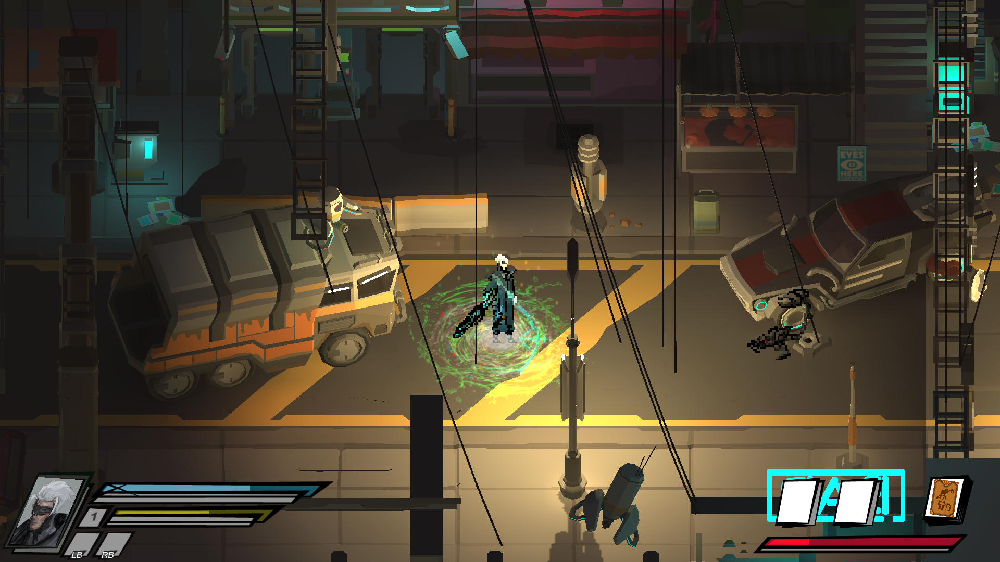
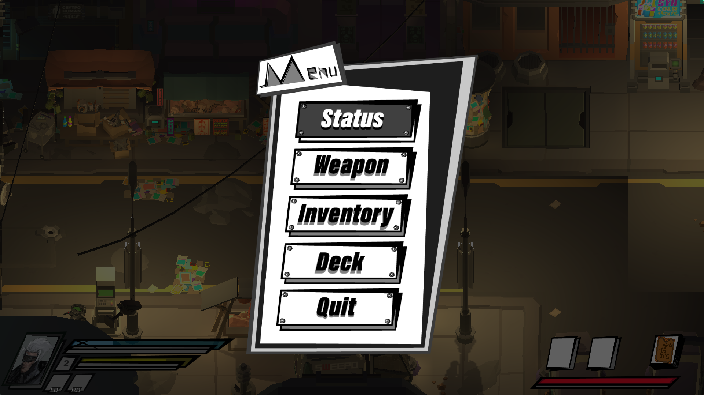
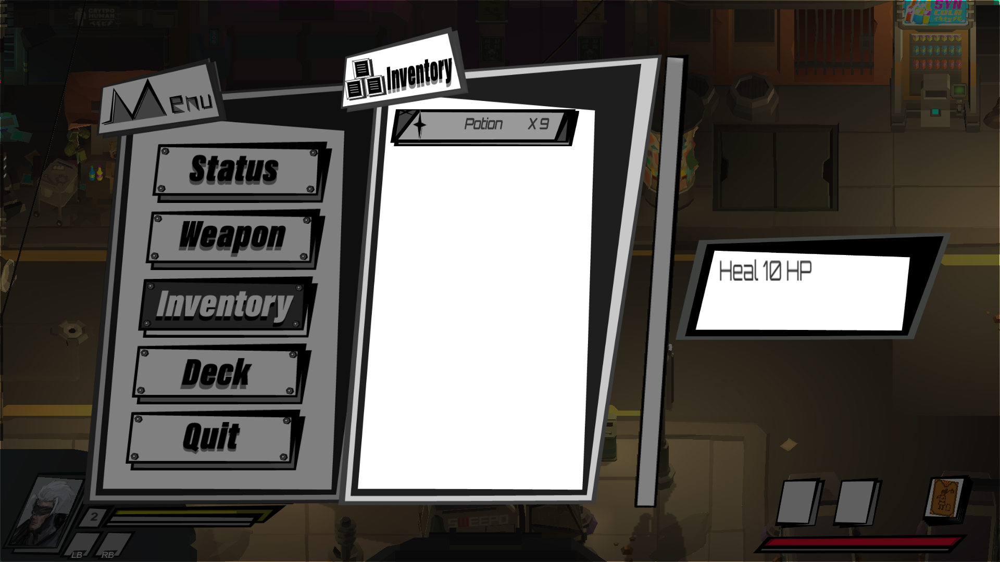
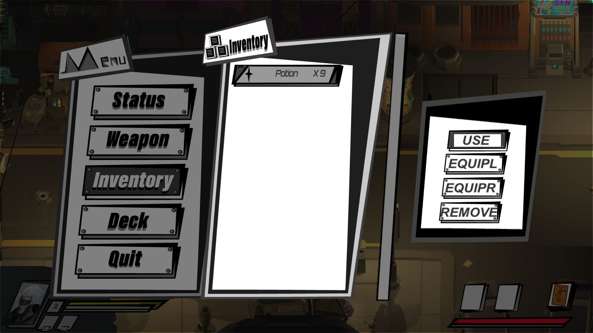

Lontarot
Lontarot is a 2.5D action role-playing game made in Unity. I am working on visual effect, inventory system, UI programming and story writing for this game. - A particle effect created by me for an ability of the main character.  - The menu directly inherit from my MenuLayer script.  - The inventory inherit from my VerticalScrollMenuLayer script.  - The inventory menu is changing its display when players click confirm button.  - Team: Yunxiao Cai (Inventory System, UI Programming, Visual Effect, Story Writing) Dong Wang (AI, Player Movement, Game Structure Construction) Chong Duan (Concept Art, Pixel Art Animation) Jinrui Hu (UI Design)